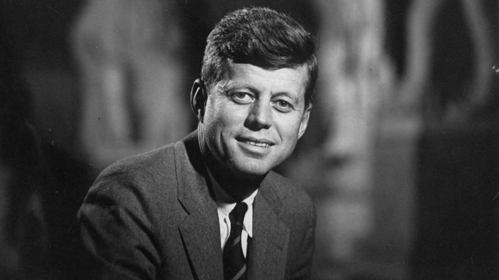

John F. Kennedy
John F. Kennedy, 35th President of the United States
John Fitzgerald Kennedy was born on May 29, 1917, in Brookline, Massachusetts. He was the second of nine children born to Joseph P. Kennedy Sr. and Rose Fitzgerald. Kennedy attended Harvard University and graduated in 1940 with a degree in international affairs.
Early Life
John F. Kennedy was born on May 29, 1917, in Brookline, Massachusetts. He was the second of nine children born to Joseph P. Kennedy Sr. and Rose Fitzgerald Kennedy. His father was a wealthy businessman and his mother was the daughter of Boston Mayor John F. Fitzgerald.
Kennedy attended Harvard University, where he studied international affairs, economics, and government. He graduated in 1940 and went on to serve in the U.S. Navy during World War II.
Political Career
After his military service, Kennedy entered politics and was elected to the U.S. House of Representatives in 1946. He later served as a U.S. Senator from Massachusetts from 1953 to 1960.
In 1960, Kennedy was elected the 35th President of the United States. At 43 years old, he was the youngest person ever elected to the presidency.
1960 Presidential Campaign: Kennedy vs. Nixon
In 1960, Kennedy announced his candidacy for President of the United States, running against Republican Vice President Richard Nixon. The campaign was closely contested, with both candidates engaging in a series of televised debates that were watched by millions of Americans.
Ultimately, Kennedy won the election with a narrow margin of victory in the popular vote and a clear victory in the electoral college.
The Kennedy Administration: Domestic and Foreign Policy
As President, Kennedy presided over a period of significant social and political change in the United States. He advocated for civil rights and economic growth, and launched several major initiatives, including the Peace Corps, the Alliance for Progress, and the space program.
Kennedy also faced significant challenges in foreign policy, including the Cuban Missile Crisis and escalating U.S. involvement in Vietnam.
Space Exploration: "We Choose to Go to the Moon
One of Kennedy's signature accomplishments as President was his commitment to space exploration. In 1961, he announced a goal of landing a man on the moon and returning him safely to Earth by the end of the decade.
This ambitious goal was realized in 1969, when astronauts Neil Armstrong and Edwin "Buzz" Aldrin became the first humans to walk on the moon.
Civil Rights: "The Question of Equality"
Kennedy was a vocal advocate for civil rights, but progress on this front was slow during his presidency. He faced significant resistance from Southern Democrats who opposed integration and equal rights for African Americans.
Nevertheless, Kennedy took several steps to address the issue, including sending federal troops to enforce desegregation in Alabama and delivering a landmark speech in 1963 in which he called for a comprehensive civil rights bill.
Cuban Missile Crisis: "The Brink of Nuclear War"
In 1962, the United States and the Soviet Union came to the brink of nuclear war during the Cuban Missile Crisis. Kennedy responded to the discovery of Soviet missiles in Cuba by imposing a naval quarantine and demanding their removal.
After several tense days of negotiation, the Soviet Union agreed to remove the missiles, and the crisis was averted.
John F. Kennedy Assassination
On November 22, 1963, John F. Kennedy was assassinated in Dallas, Texas, while traveling in an open car during a motorcade. He was hit by two shots, and the fatal shot struck him in the head.
The shooter, Lee Harvey Oswald, was later arrested but was himself shot and killed while in police custody, leading to conspiracy theories that still circulate today.
Legacy
Despite his short time in office, John F. Kennedy left a lasting legacy. His advocacy for civil rights, his efforts to avoid nuclear war with the Soviet Union, and his commitment to public service have inspired generations of Americans.
He was also the youngest person ever elected to the presidency, and his youthful energy and charisma helped to reshape the office and the nation.
A man may die, nations may rise and fall, but an idea lives on.
- John F. Kennedy